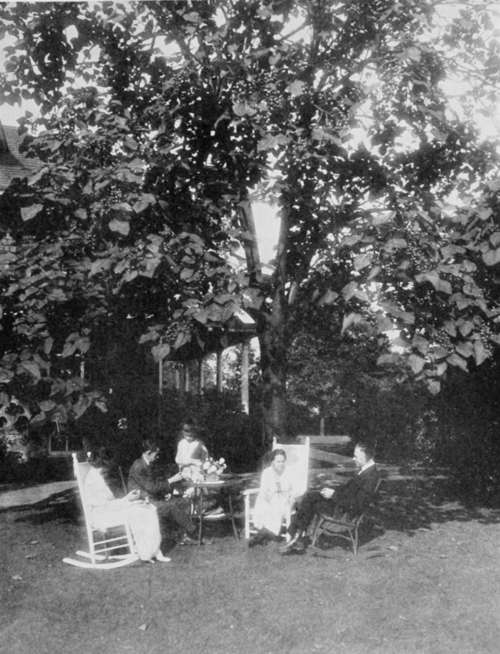

Chapter XXX. Transplanting Of Trees
Description
This section is from the book "Landscape Gardening", by Andrew Jackson Downing. Also available from Amazon: Landscape Gardening.
Chapter XXX. Transplanting Of Trees
THERE is no subject on which the professional horticulturist is more frequently consulted in America, than transplanting trees. And, as it is an essential branch of Landscape Gardenings—indeed, perhaps, the most important and necessary one to be practically understood in the improvement or embellishment of new country residences — we shall offer a few remarks here, with the hope of rendering it a more easy and successful practice in the hands of amateurs.
The first and most important consideration in transplanting should be the preservation of the roots. By this we do not mean a certain bulk of the larger and more important ones only, but as far as possible all the numerous small fibres and rootlets so indispensably necessary in assisting the tree to recover from the shock of removal. The coarser and larger roots serve to secure the tree in its position, and convey the fluids; but it is by means of the small fibrous roots, or the delicate and numerous points of these fibres called spongioles, that the food of plants is imbibed, and the destruction of such is manifestly in the highest degree fatal to the success of the transplanted tree. To avoid this as far as practicable, we should, in removing a tree, commence at such a distance as to include a circumference large enough to comprise the great majority of the roots.
* In the early editions of "Landscape Gardening" Mr. Downing introduced rather extensive appendices. Of these Mr. Sargent saved only two for the Sixth Edition, viz., the one on "Transplanting of Trees" and one on the "Treatment of Lawns." These contain much interesting and original matter from Mr. Downing, and are accordingly reproduced in the present edition. The modern reader, however, will remark with surprise the extent to which English authors were quoted, English practice imitated and English opinion venerated. — F. A. W.
At that distance from the trunk we shall find most of the smaller roots, which should be carefully loosened from the soil, with as little injury as possible; the earth should be gently and gradually removed from the larger roots, as we proceed onward from the extremity of the circle to the centre, and when we reach the nucleus of roots surrounding the trunk, and fairly undermine the whole, we shall find ourselves in possession of a tree in such a perfect condition, that even when of considerable size, we may confidently hope for a speedy recovery of its former luxuriance after being replanted.
Now to remove a tree in this manner, requires not only a considerable degree of experience, which is only to be acquired by practice, but also much patience and perseverance while engaged in the work. It is not a difficult task to remove, in a careless manner, four or five trees in a day, of fifteen feet in height, by the assistance of thee or four men, and proper implements of removal, while one or two trees only can be removed if the roots and branches are preserved entire or nearly so. Yet in the latter case, if the work be well performed, we shall have the satisfaction of beholding the subjects, when removed, soon taking fresh root, and becoming vigorous healthy trees, with fine luxuriant heads, while three-fourths of the former will most probably perish, and the remainder struggle for several years, under the loss of so large a portion of their roots and branches, before they entirely recover, and put on the appearance of handsome trees.
When a tree is carelessly transplanted, and the roots much mutilated, the operator feels obliged to reduce the top accordingly; as experience teaches him, that although the leaves may expand, yet they will soon perish without a fresh supply of food from the roots. But when the largest portion of the roots are carefully taken up with the tree, pruning should be less resorted to, and thus the original symmetry and beauty of the head retained. When this is the case, the leaves contribute as much, by their peculiar action in elaborating the sap, towards re-establishing the tree, as the roots; and indeed the two act so reciprocally with each other, that any considerable injury to the one always affects the other. "The functions of respiration, perspiration, and digestion," says Professor Lindley, "which are the particular offices of leaves, are essential to the health of a plant; its healthiness being in proportion to the degree in which these functions are duly performed. The leaf is in reality a natural contrivance for exposing a large surface to the influence of external agents, by whose assistance the crude sap contained in the stem is altered, and rendered suitable to the particular wants of the species, and for returning into the general circulation, the fluids in their matured condition. In a word, the leaf of a plant is its lungs and stomach traversed by a system of veins." * All the pruning, therefore, that is necessary, when a tree is properly transplanted, will be comprised in paring smooth all bruises or accidental injuries, received by the roots or branches during the operation, or the removal of a few that may interfere with elegance of form in the head.
Fig. 42. Social Hour under the Paulownia Tree.
Next in importance to the requisite care in performing the operation of transplanting, is the proper choice of individual trees to be transplanted. In making selections for removal among our fine forest trees, it should never be forgotten that there are two distinct kinds of subjects, even of the same species of every tree, viz. those that grow among and are surrounded by other trees or woods, and those which grow alone, in free open exposures, where they are acted upon by the winds, storms, and sunshine, at all times and seasons. The former class it will always be exceedingly difficult to transplant successfully even with the greatest care, while the latter may always be removed with comparatively little risk of failure.
Continue to: